using Plots
using Random
Random.seed!(1);Tutorial: Making Plots with Julia
Overview
This tutorial will give some examples of plotting and plotting features in Julia, as well as providing references to some relevant resources. The main plotting library is Plots.jl, but there are some others that provide useful features.
Some Resources
Plots.jluseful tipsPlots.jlexamples- Plot attributes
- Axis attributes
- Color names
Demos
Line Plots
To generate a basic line plot, use plot.
y = rand(5)
plot(y, label="original data", legend=:topright)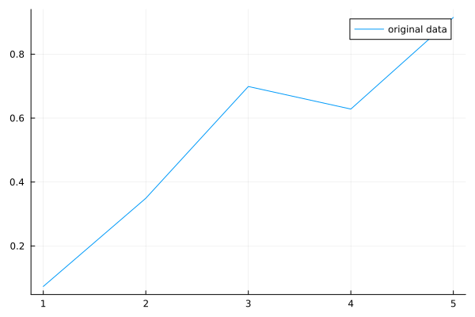
There’s a lot of customization here that can occur, a lot of which is discussed in the docs or can be found with some Googling.
Adding Plot Elements
Now we can add some other lines and point markers.
y2 = rand(5)
y3 = rand(5)
plot!(y2, label="new data")
scatter!(y3, label="even more data")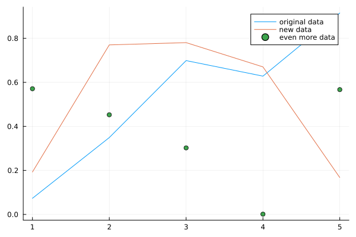
Remember that an exclamation mark (!) at the end of a function name means that function modifies an object in-place, so plot! and scatter! modify the current plotting object, they don’t create a new plot.
Removing Plot Elements
Sometimes we want to remove legends, axes, grid lines, and ticks.
plot!(legend=false, axis=false, grid=false, ticks=false)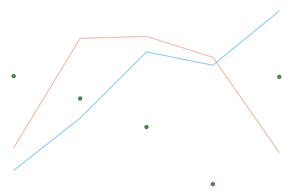
Aspect Ratio
If we want to have a square aspect ratio, use ratio = 1.
v = rand(5)
plot(v, ratio=1, legend=false)
scatter!(v)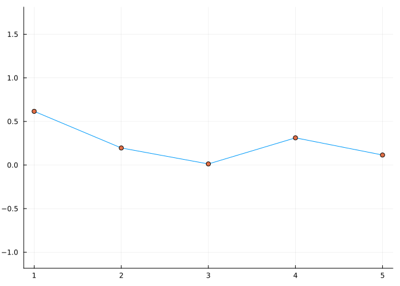
Heatmaps
A heatmap is effectively a plotted matrix with colors chosen according to the values. Use clim to specify a fixed range for the color limits.
A = rand(10, 10)
heatmap(A, clim=(0, 1), ratio=1, legend=false, axis=false, ticks=false)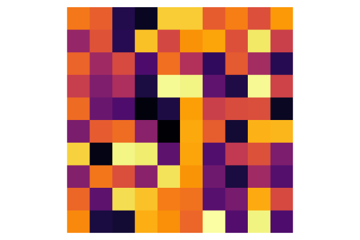
M = [ 0 1 0; 0 0 0; 1 0 0]
whiteblack = [RGBA(1,1,1,0), RGB(0,0,0)]
heatmap(c=whiteblack, M, aspect_ratio = 1, ticks=.5:3.5, lims=(.5,3.5), gridalpha=1, legend=false, axis=false, ylabel="i", xlabel="j")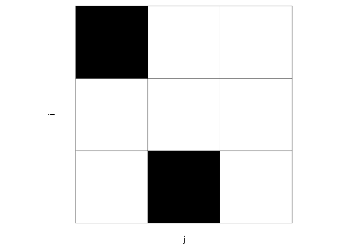
Custom Colors
using Colors
mycolors = [colorant"lightslateblue",colorant"limegreen",colorant"red"]
A = [i for i=50:300, j=1:100]
heatmap(A, c=mycolors, clim=(1,300))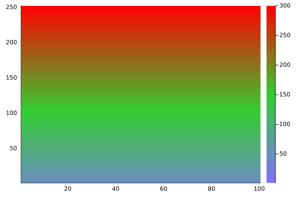
Plotting Areas Under Curves
y = rand(10)
plot(y, fillrange= y.*0 .+ .5, label= "above/below 1/2", legend =:top)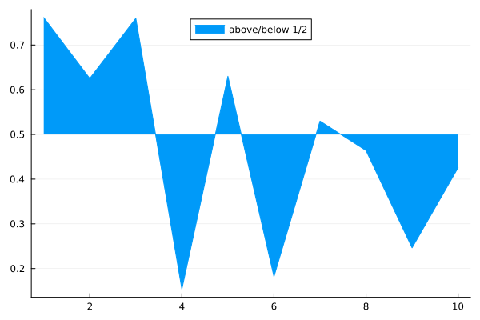
x = LinRange(0,2,100)
y1 = exp.(x)
y2 = exp.(1.3 .* x)
plot(x, y1, fillrange = y2, fillalpha = 0.35, c = 1, label = "Confidence band", legend = :topleft)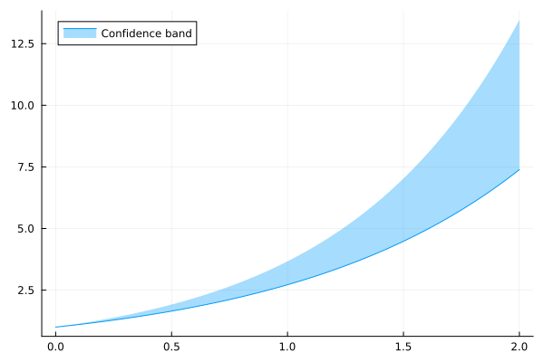
x = -3:.01:3
areaplot(x, exp.(-x.^2/2)/√(2π),alpha=.25,legend=false)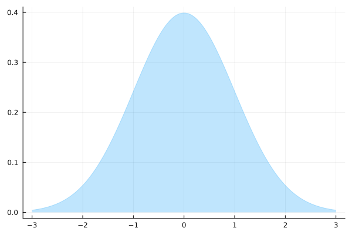
M = [1 2 3; 7 8 9; 4 5 6; 0 .5 1.5]
areaplot(1:3, M, seriescolor = [:red :green :blue ], fillalpha = [0.2 0.3 0.4])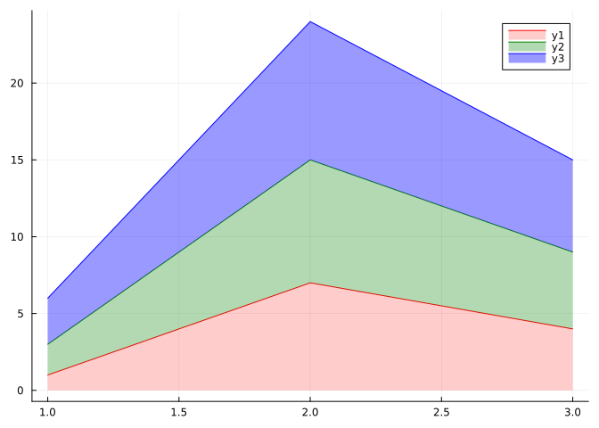
using SpecialFunctions
f = x->exp(-x^2/2)/√(2π)
δ = .01
plot()
x = √2 .* erfinv.(2 .*(δ/2 : δ : 1) .- 1)
areaplot(x, f.(x), seriescolor=[ :red,:blue], legend=false)
plot!(x, f.(x),c=:black)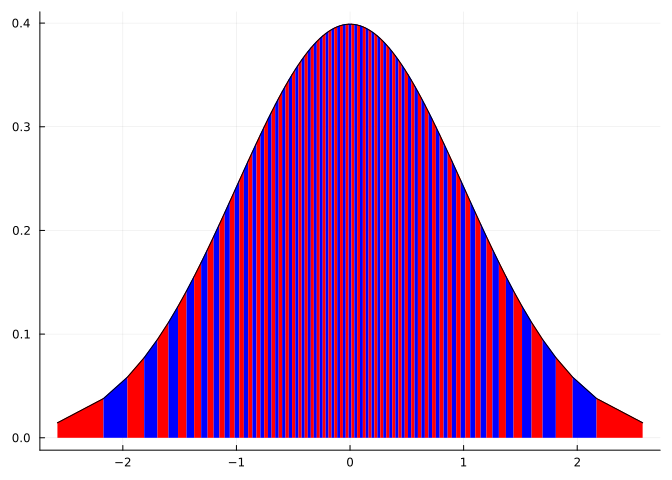
Plotting Shapes
rectangle(w, h, x, y) = Shape(x .+ [0,w,w,0], y .+ [0,0,h,h])
circle(r,x,y) = (θ = LinRange(0,2π,500); (x.+r.*cos.(θ), y.+r.*sin.(θ)))
plot(circle(5,0,0), ratio=1, c=:red, fill=true)
plot!(rectangle(5*√2,5*√2,-2.5*√2,-2.5*√2),c=:white,fill=true,legend=false)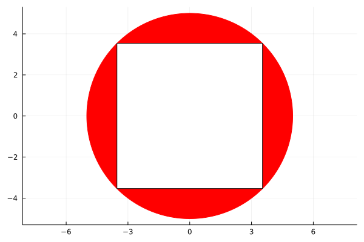
Plotting Distributions
The StatsPlots.jl package is very useful for making various plots of probability distributions.
using Distributions, StatsPlots
plot(Normal(2, 5))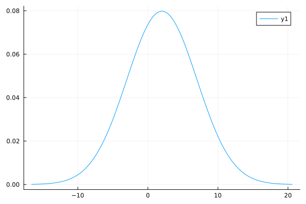
scatter(LogNormal(0.8, 1.5))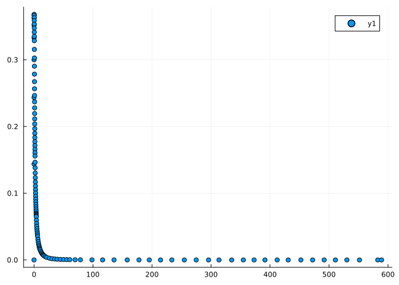
We can also use this functionality to plot distributions of data in tabular data structures like DataFrames.
using DataFrames
dat = DataFrame(a = 1:10, b = 10 .+ rand(10), c = 10 .* rand(10))
@df dat density([:b :c], color=[:black :red])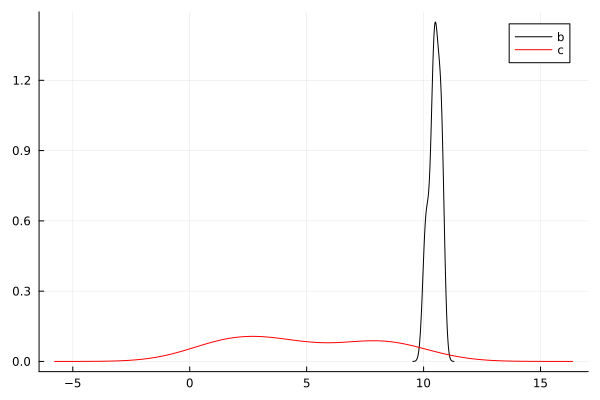
Editing Plots Manually
pl = plot(1:4,[1, 4, 9, 16])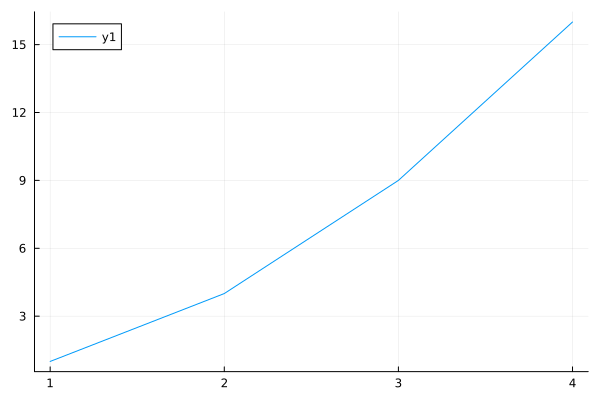
pl.attrRecipesPipeline.DefaultsDict with 30 entries:
:dpi => 100
:background_color_outside => :match
:plot_titlefontvalign => :vcenter
:warn_on_unsupported => true
:background_color => RGBA{Float64}(1.0,1.0,1.0,1.0)
:size => (600, 400)
:inset_subplots => nothing
:display_type => :auto
:overwrite_figure => true
:html_output_format => :auto
:plot_titlefontfamily => :match
:plot_titleindex => 0
:foreground_color => RGB{N0f8}(0.0,0.0,0.0)
:window_title => "Plots.jl"
:plot_titlefontrotation => 0.0
:extra_plot_kwargs => Dict{Any, Any}()
:plot_titlefonthalign => :hcenter
:pos => (0, 0)
:tex_output_standalone => false
:extra_kwargs => :series
:layout => 1
:thickness_scaling => 1
:plot_titlelocation => :center
:plot_titlefontsize => 16
:plot_title => ""
⋮ => ⋮pl.series_list[1]Plots.Series(RecipesPipeline.DefaultsDict(:plot_object => Plot{Plots.GRBackend() n=1}, :subplot => Subplot{1}, :label => "y1", :fillalpha => nothing, :linealpha => nothing, :linecolor => RGBA{Float64}(0.0,0.6056031611752245,0.9786801175696073,1.0), :x_extrema => (NaN, NaN), :series_index => 1, :markerstrokealpha => nothing, :markeralpha => nothing…))pl[:size]=(300,200)(300, 200)pl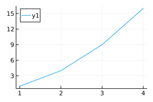
Log-Scaled Axes
xx = .1:.1:10
plot(xx.^2, xaxis=:log, yaxis=:log)
plot(exp.(x), yaxis=:log)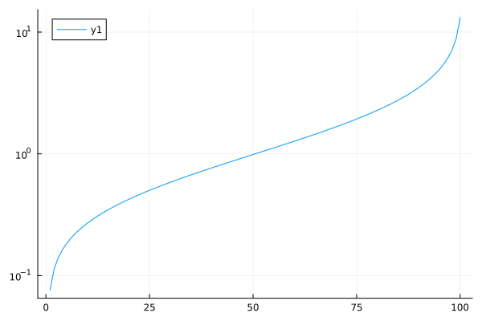